文档11 上传/富文本/Excel导入与导出
在Web环境下，文件上传都是在数据库中存储文件的路径，文件存放在服务器磁盘中。
单文件上传指数据库表字段中存放上传文件的路径，需要在单据的新增和修改界面提供上传控件来完成数据的上传，类似图书的封面图，具体的开发方法见下边的步骤：
以图书表的封面图为例子：
把对应表单控件换成上传表单控件和展示控件。
新增的
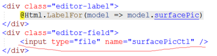
修改的：
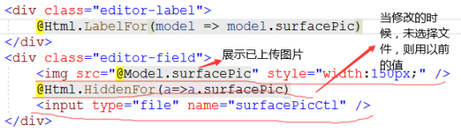
1） 需要展示出以前的上传图片。
2） 要把以前上传的图片地址保存在隐藏表单中，如果未上传，则给服务器提交以前的值，当需要检查图片必须上传的时候方便检查。
3） 为了能够将以前的值放在隐藏表单中，因此上传控件的名称不能和字段名相同。
详情的：
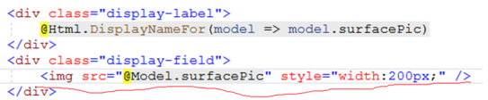
当单击新增视图或修改视图的“保存”按钮时，获取上传的文件，并存放到数据库中，新增和修改的代码雷同：
新增的：
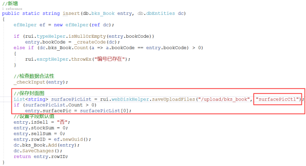
代码解读：
调用封装好的saveUploadFiles方法，第一个参数是图片保存位置，第二个参数是前端input表单的名称。
第一个参数路径最后不携带“/”符号。
默认只能上传一张图片，因此这里取第一张图片作为封面图。
修改的
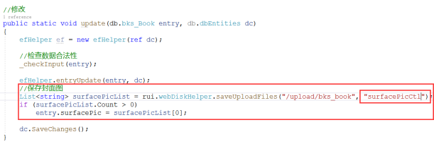
代码解读：
和新增做法一样，需要注意的时，对模型中其它属性的变更一定要放在entryUpdate()方法的下方。
多文件上传主要用于单据的附件，例如入库单，在创建入库单的时候，需要把和入库有关的单据附件上传上去，允许传递多个附件，这种方式在框架中已完成了大部分工作，只需要在需要附件的单据上增加对应的代码即可（类似主表挂载从表的做法），具体方法见下边的步骤。
在单据主表的修改视图下方挂载如下的代码（以入库单为例）：
需要放在form表单的外边
<fieldset>
<legend>相关附件</legend>
@{
var routeValue = new
{
attachResourceCode = "bks_BookStock", //资源标识
attachKeyCode = Model.stockCode, //单据主键值
attachOpMode = "Update"
};
Html.RenderAction("SelectPartial", "sys_BillAttach", routeValue);
}
</fieldset>
运行效果：
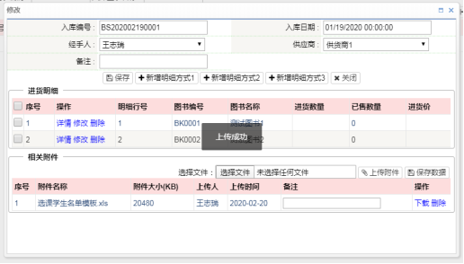
在单据主表的详情视图挂载如下的代码（以入库单为例）：
在详情视图的最下边加入如下的代码：
<fieldset>
<legend>相关附件</legend>
@{
var routeValue = new
{
attachResourceCode = "bks_BookStock", //资源标识
attachKeyCode = Model.stockCode, //单据主键值
attachOpMode = "Detail"
};
Html.RenderAction("SelectPartial", "sys_BillAttach", routeValue);
}
</fieldset>
运行效果：
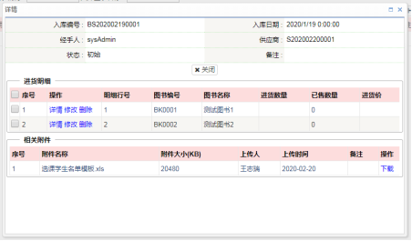
4）上传的附件保存在“sys_BillAttach”表内，相关的实现代码通过 “sys_BillAttach”控制器实现的。
在开发项目过程中，遇到公告内容，新闻内容之类的字段时，数据库字段类型应该选择“nvarchar(max)或者ntext”类型，这种类型的字段允许录入的内容特别多（例如图书表的图书介绍，作者介绍，图书目录等字段），为了方便对录入的内容进行排版，需要提供类似于Word的网页插件，这类插件称为“富文本编辑器”，这类插件类似于网页编辑器，能够编辑要展示的网页内容，在项目中，我们选择百度的uEditor插件，具体使用方法见下边的步骤。
以图书介绍和作者介绍为例介绍如何完成
在图书维护新增，修改，详情视图页面顶部引入uEditor插件的相关JS资源
<script type="text/javascript" charset="utf-8" src="/uEditor/ueditor.config.js"></script>
<script type="text/javascript" charset="utf-8" src="/uEditor/ueditor.all.min.js"></script>
<script type="text/javascript" charset="utf-8" src="/uEditor/lang/zh-cn/zh-cn.js"></script>
在新增和修改视图上更换需要富文本框的字段控件
当一个界面需要多个uEditor插件的时候，名称上需要加上字段后缀方便区分，如果只有一个，则可以不用加上字段名后缀了。
这里的“uEditorProxy”是一个代理表单，uEditor控件录入的值无法与模型进行绑定，需要提供一个代理表单控件。
代码文件：Code01.txt
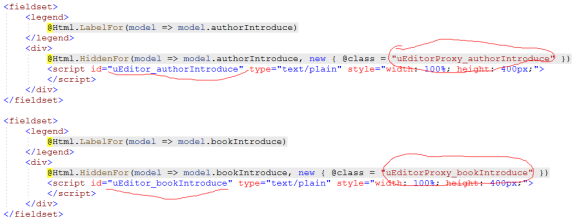
在新增和修改视图的顶部编写JS代码完成代理表单和uEditor值之间的互动
代码放在uEditor资源引入的下方
代码文件：Code02.txt
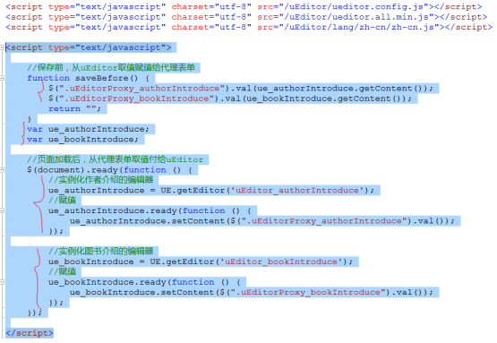
代码解读：
1） 当uEditor控件初始化后，获取代理表单上的值，并复制给uEditor控件。
2） 提供saveBefore方法，该方法会在保存按钮请求后台Action之前执行，该方法负责把uEditor控件上的值获取过来并赋值给代理表单，通过代理表单将值传递给后端。
在新增和修改的Post请求的Action上方增加如下过滤器。
[ValidateInput(false)]
该特性用来设置是否对提交的内容进行合法性检测，富文本内容提交必须加上这个。
在详情视图哪里修改代码来展示富文本内容。
代码文件：Code03.txt
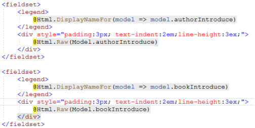
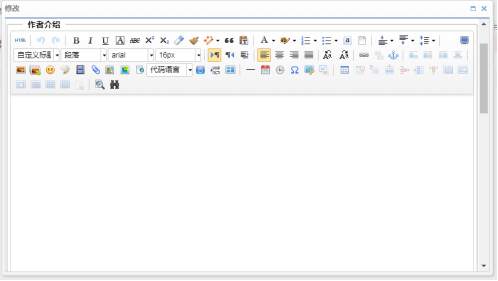
辅助练习
1）将“bookDirectory”字段也变更为富文本方式。
在项目开发过程中，客户的基础数据以前都保存在Excel中，当使用系统后，他们不想通过新增方式一条条的录入系统中，因此需要为客户提供数据的批量导入功能，具体的开发步骤如下：以批量导入出版社为例。
把空的Excel模板文件保存在/upload/excelTemplate目录内，文件名用表名命名。
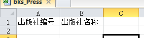
在出版社的业务类中增加批量保存的业务方法
代码文件：code04.txt
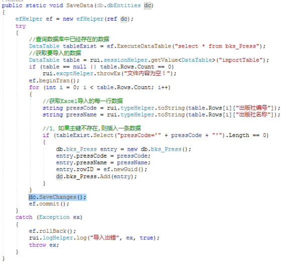
代码解读：
1） 为了防止主键重复，首先查询处数据库中已经存在的数据
2） 从内置对象中获取上传的数据（上传的数据默认保存在这个对象中，上传代码框架已统一写好。
3） 通过事务保证导入数据的一致性。
4） 对导入的数据进行合法性检查，需要那些检查根据表的业务需求。
在“sys_ExlImport”类的“importData”方法内增加代码来调用对应的保存方法
该代码位于dbLibrary/prj/sys_ExlImport文件中
public class sys_ExlImport
{
public static void importData(string tableName)
{
//根据表名调用对应业务类内的业务方法
if (tableName == "bks_Press")
db.bll.bks_Press.SaveData(null);
}
}
1、 在出版社的主界面工具栏内增加Excel导入按钮。
@Html.ActionLink("Excel导入", "Import", "sys_ExlImport", new { tableName = "bks_Press" }, new { data_show = rui.privCtl.isPriv(ctrl, rui.privCtl.eOp.Import), @class = "showDialogR opImport" })
tableName属性一定要等于要导入的表名称。
点击导入按钮后，显示导入窗口
选择文件后，点击“上传并展示”将要导入的文件上传到服务器上读取上传文件中的数据保存到内置对象中，并展示所读取的数据
点击“保存到数据库”后，调用sys_ExlImport.importData方法内的代码，根据传入的表名调用用户所写的批量导入业务方法。
框架实现的代码都位于“sys_ExlImportController”控制器内。
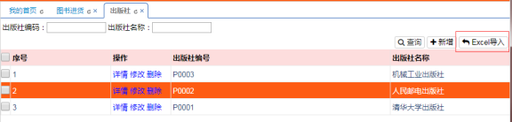
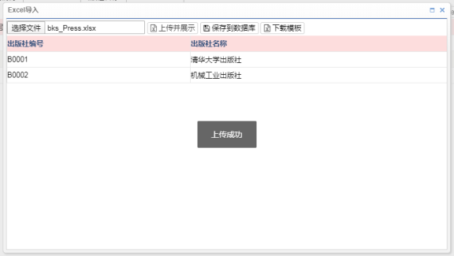
在项目开发过程中，客户需要把相关的数据导出用于其它用途，因此主界面中还需要提供数据导出的功能，能够把需要导出的数据导出为Excel文件，具体的开发步骤如下：
Excel导出用到了Aspose.Cell组件，组件的使用细节可以参考网络文档。
以图书导出为例介绍如何实现。
在book的Controller内提供导出的Action“SelectExport”
public ActionResult SelectExport(db.view.bks_Book model)
{
try
{
//all代表要导出查询的所有数据,page代表导出本页的数据
model.ExportRange = rui.dataRange.all.ToString();
model.SheetName = "图书信息";
model.Search();
return File(model.ExportToXls(), rui.innerCode.mime(".xlsx"), "图书信息.xlsx");
}
catch (Exception ex)
{
rui.logHelper.log(ex);
Response.Write(string.Format("<script>alert('{0}');history.go(-1);</script>", ex.Message));
}
return null;
}
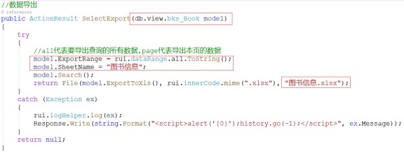
代码解读：
1） 导出的代码和主界面的代码有点相似，传入相同的视图模型。
2） 在代码职工需要设定要导出数据的范围（本页数据还是搜索的所有数据），导出的Excel单元格名称。
3） 调用Search方法时，该方法会根据前两个变量的配置，获取合适的数据，并将其生成到Excel文件流中（这部分代码框架中统一写好了）。
4） 通过model.ExportToXls()方法获取Excel的文件名，设定导出的文件MIME类型，设定导出文件名，即可实现文件的导出。
在图书的主界面中提供导出按钮，运行程序查看运行效果，导出的列和展示的列保持一致。
@Html.ActionLink("Excel导出", "SelectExport", null, new { @class = "opExlExport" })
运行代码查看效果。
第 1 页 共 10 页